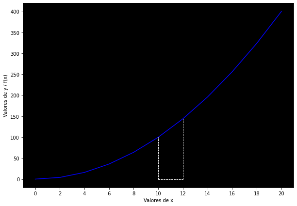
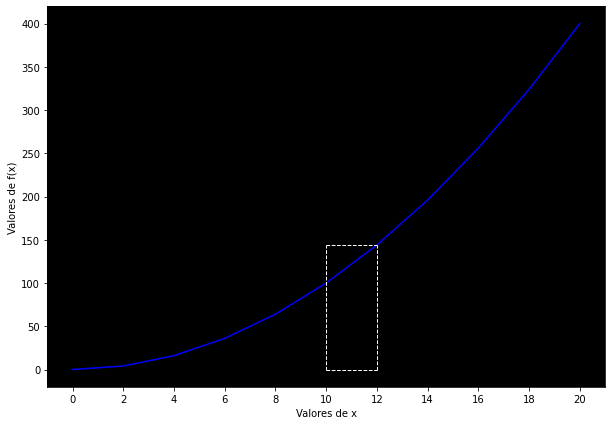
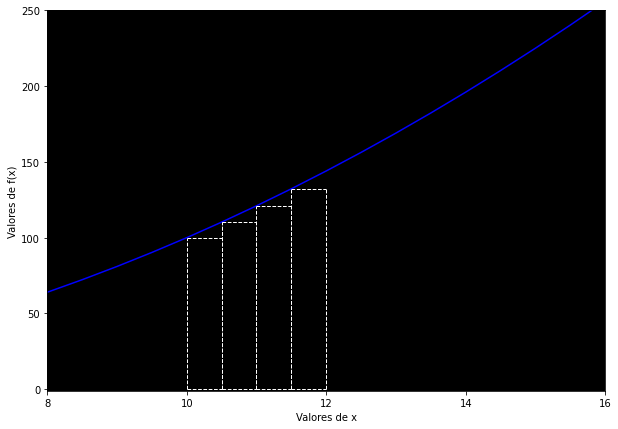

<!DOCTYPE html>


<html lang="en" >

  <head>
    <meta charset="utf-8" />
    <meta name="viewport" content="width=device-width, initial-scale=1.0" /><meta name="generator" content="Docutils 0.18.1: http://docutils.sourceforge.net/" />

    <title>Elementos de cálculo infinitesimal &#8212; Dantis Elementorum</title>
  
  
  
  <script data-cfasync="false">
    document.documentElement.dataset.mode = localStorage.getItem("mode") || "";
    document.documentElement.dataset.theme = localStorage.getItem("theme") || "light";
  </script>
  
  <!-- Loaded before other Sphinx assets -->
  <link href="../../_static/styles/theme.css?digest=e353d410970836974a52" rel="stylesheet" />
<link href="../../_static/styles/bootstrap.css?digest=e353d410970836974a52" rel="stylesheet" />
<link href="../../_static/styles/pydata-sphinx-theme.css?digest=e353d410970836974a52" rel="stylesheet" />

  
  <link href="../../_static/vendor/fontawesome/6.1.2/css/all.min.css?digest=e353d410970836974a52" rel="stylesheet" />
  <link rel="preload" as="font" type="font/woff2" crossorigin href="../../_static/vendor/fontawesome/6.1.2/webfonts/fa-solid-900.woff2" />
<link rel="preload" as="font" type="font/woff2" crossorigin href="../../_static/vendor/fontawesome/6.1.2/webfonts/fa-brands-400.woff2" />
<link rel="preload" as="font" type="font/woff2" crossorigin href="../../_static/vendor/fontawesome/6.1.2/webfonts/fa-regular-400.woff2" />

    <link rel="stylesheet" type="text/css" href="../../_static/pygments.css" />
    <link rel="stylesheet" href="../../_static/styles/sphinx-book-theme.css?digest=14f4ca6b54d191a8c7657f6c759bf11a5fb86285" type="text/css" />
    <link rel="stylesheet" type="text/css" href="../../_static/togglebutton.css" />
    <link rel="stylesheet" type="text/css" href="../../_static/copybutton.css" />
    <link rel="stylesheet" type="text/css" href="../../_static/mystnb.4510f1fc1dee50b3e5859aac5469c37c29e427902b24a333a5f9fcb2f0b3ac41.css" />
    <link rel="stylesheet" type="text/css" href="../../_static/sphinx-thebe.css" />
    <link rel="stylesheet" type="text/css" href="../../_static/proof.css" />
    <link rel="stylesheet" type="text/css" href="../../_static/design-style.4045f2051d55cab465a707391d5b2007.min.css" />
  
  <!-- Pre-loaded scripts that we'll load fully later -->
  <link rel="preload" as="script" href="../../_static/scripts/bootstrap.js?digest=e353d410970836974a52" />
<link rel="preload" as="script" href="../../_static/scripts/pydata-sphinx-theme.js?digest=e353d410970836974a52" />

    <script data-url_root="../../" id="documentation_options" src="../../_static/documentation_options.js"></script>
    <script src="../../_static/jquery.js"></script>
    <script src="../../_static/underscore.js"></script>
    <script src="../../_static/_sphinx_javascript_frameworks_compat.js"></script>
    <script src="../../_static/doctools.js"></script>
    <script src="../../_static/clipboard.min.js"></script>
    <script src="../../_static/copybutton.js"></script>
    <script src="../../_static/scripts/sphinx-book-theme.js?digest=5a5c038af52cf7bc1a1ec88eea08e6366ee68824"></script>
    <script>let toggleHintShow = 'Click to show';</script>
    <script>let toggleHintHide = 'Click to hide';</script>
    <script>let toggleOpenOnPrint = 'true';</script>
    <script src="../../_static/togglebutton.js"></script>
    <script>var togglebuttonSelector = '.toggle, .admonition.dropdown';</script>
    <script src="../../_static/design-tabs.js"></script>
    <script async="async" src="https://www.googletagmanager.com/gtag/js?id=G-C9T8ZX64EM"></script>
    <script>
                window.dataLayer = window.dataLayer || [];
                function gtag(){ dataLayer.push(arguments); }
                gtag('js', new Date());
                gtag('config', 'G-C9T8ZX64EM');
            </script>
    <script>const THEBE_JS_URL = "https://unpkg.com/thebe@0.8.2/lib/index.js"
const thebe_selector = ".thebe,.cell"
const thebe_selector_input = "pre"
const thebe_selector_output = ".output, .cell_output"
</script>
    <script async="async" src="../../_static/sphinx-thebe.js"></script>
    <script>window.MathJax = {"options": {"processHtmlClass": "tex2jax_process|mathjax_process|math|output_area"}}</script>
    <script defer="defer" src="https://cdn.jsdelivr.net/npm/mathjax@3/es5/tex-mml-chtml.js"></script>
    <script>DOCUMENTATION_OPTIONS.pagename = 'notebooks/alfa/calculo';</script>
    <link rel="canonical" href="https://dantenoguez.github.io/notebooks/alfa/calculo.html" />
    <link rel="shortcut icon" href="../../_static/logo.png"/>
    <link rel="index" title="Index" href="../../genindex.html" />
    <link rel="search" title="Search" href="../../search.html" />
    <link rel="next" title="Elementos de procesamiento de lenguajes naturales, o El Hacedor" href="hacedor.html" />
    <link rel="prev" title="Elementos de redes neuronales" href="redes.html" />
  <meta name="viewport" content="width=device-width, initial-scale=1"/>
  <meta name="docsearch:language" content="en"/>
  </head>
  
  
  <body data-bs-spy="scroll" data-bs-target=".bd-toc-nav" data-offset="180" data-bs-root-margin="0px 0px -60%" data-default-mode="">

  
  
  <a class="skip-link" href="#main-content">Skip to main content</a>
  
  <input type="checkbox"
          class="sidebar-toggle"
          name="__primary"
          id="__primary"/>
  <label class="overlay overlay-primary" for="__primary"></label>
  
  <input type="checkbox"
          class="sidebar-toggle"
          name="__secondary"
          id="__secondary"/>
  <label class="overlay overlay-secondary" for="__secondary"></label>
  
  <div class="search-button__wrapper">
    <div class="search-button__overlay"></div>
    <div class="search-button__search-container">
<form class="bd-search d-flex align-items-center"
      action="../../search.html"
      method="get">
  <i class="fa-solid fa-magnifying-glass"></i>
  <input type="search"
         class="form-control"
         name="q"
         id="search-input"
         placeholder="Search this book..."
         aria-label="Search this book..."
         autocomplete="off"
         autocorrect="off"
         autocapitalize="off"
         spellcheck="false"/>
  <span class="search-button__kbd-shortcut"><kbd class="kbd-shortcut__modifier">Ctrl</kbd>+<kbd>K</kbd></span>
</form></div>
  </div>
  
    <nav class="bd-header navbar navbar-expand-lg bd-navbar">
    </nav>
  
  <div class="bd-container">
    <div class="bd-container__inner bd-page-width">
      
      <div class="bd-sidebar-primary bd-sidebar">
        

  
  <div class="sidebar-header-items sidebar-primary__section">
    
    
    
    
  </div>
  
    <div class="sidebar-primary-items__start sidebar-primary__section">
        <div class="sidebar-primary-item">
  

<a class="navbar-brand logo" href="../../intro.html">
  
  
  
  
    
    
      
    
    
    
    <script>document.write(``);</script>
  
  
</a></div>
        <div class="sidebar-primary-item"><nav class="bd-links" id="bd-docs-nav" aria-label="Main">
    <div class="bd-toc-item navbar-nav active">
        
        <ul class="nav bd-sidenav bd-sidenav__home-link">
            <li class="toctree-l1">
                <a class="reference internal" href="../../intro.html">
                    Dantis Elementorum
                </a>
            </li>
        </ul>
        <p aria-level="2" class="caption" role="heading"><span class="caption-text">Elementorum Physicæ Mathematicæ</span></p>
<ul class="current nav bd-sidenav">
<li class="toctree-l1"><a class="reference internal" href="programacion.html">Elementos de programación</a></li>
<li class="toctree-l1"><a class="reference internal" href="redes.html">Elementos de redes neuronales</a></li>
<li class="toctree-l1 current active"><a class="current reference internal" href="#">Elementos de cálculo infinitesimal</a></li>
<li class="toctree-l1"><a class="reference internal" href="hacedor.html">Elementos de procesamiento de lenguajes naturales, o El Hacedor</a></li>
<li class="toctree-l1"><a class="reference internal" href="hacedor2.html">Elementos de procesamiento de lenguajes naturales, parte II</a></li>
<li class="toctree-l1"><a class="reference internal" href="digitalbio.html">Elementos de biología digital</a></li>
</ul>
<p aria-level="2" class="caption" role="heading"><span class="caption-text">Elementorum Politicæ Œconomicæ Iurisprudentiæ</span></p>
<ul class="nav bd-sidenav">
<li class="toctree-l1"><a class="reference internal" href="../beta/iurisprudentiae.html">Elementos de leyes, o Nova methodus discendæ iurisprudentiæ</a></li>
<li class="toctree-l1"><a class="reference internal" href="../beta/schumpeter.html">Notas a Schumpeter</a></li>
</ul>
<p aria-level="2" class="caption" role="heading"><span class="caption-text">Elementorum Poeticæ</span></p>
<ul class="nav bd-sidenav">
<li class="toctree-l1"><a class="reference internal" href="../poeticae/borges.html">Elementos de literatura borgesiana, o Borges y sus precursores</a></li>
<li class="toctree-l1"><a class="reference internal" href="../poeticae/afro.html">Elementos de música afroamericana</a></li>
</ul>
<p aria-level="2" class="caption" role="heading"><span class="caption-text">Exagium</span></p>
<ul class="nav bd-sidenav">
<li class="toctree-l1"><a class="reference internal" href="../exagium/tzompantli.html">Breve ensayo sobre el tzompantli</a></li>
<li class="toctree-l1"><a class="reference internal" href="../exagium/diccionario.html">Diccionario fantástico de la lengua española</a></li>
<li class="toctree-l1"><a class="reference internal" href="../exagium/escribir.html">Escribir ¿para qué?</a></li>
<li class="toctree-l1"><a class="reference internal" href="../exagium/secturnial.html">Relatos secturniales</a></li>
<li class="toctree-l1"><a class="reference internal" href="../exagium/castillos.html">La importancia de ser olvidado</a></li>
<li class="toctree-l1"><a class="reference internal" href="../exagium/aforismos.html">A few maxims for the instruction of the over-educated</a></li>
<li class="toctree-l1"><a class="reference internal" href="../exagium/ia.html">Tientos cibernéticos</a></li>
<li class="toctree-l1"><a class="reference internal" href="../exagium/coronavirus.html">Bitácora del confinamiento</a></li>
</ul>

    </div>
</nav></div>
    </div>
  
  
  <div class="sidebar-primary-items__end sidebar-primary__section">
  </div>
  
  <div id="rtd-footer-container"></div>


      </div>
      
      <main id="main-content" class="bd-main">
        
        

<div class="sbt-scroll-pixel-helper"></div>

          <div class="bd-content">
            <div class="bd-article-container">
              
              <div class="bd-header-article">
<div class="header-article-items header-article__inner">
  
    <div class="header-article-items__start">
      
        <div class="header-article-item"><label class="sidebar-toggle primary-toggle btn btn-sm" for="__primary" title="Toggle primary sidebar" data-bs-placement="bottom" data-bs-toggle="tooltip">
  <span class="fa-solid fa-bars"></span>
</label></div>
      
    </div>
  
  
    <div class="header-article-items__end">
      
        <div class="header-article-item">

<div class="article-header-buttons">


<div class="dropdown dropdown-source-buttons">
  <button class="btn dropdown-toggle" type="button" data-bs-toggle="dropdown" aria-expanded="false" aria-label="Source repositories">
    <i class="fab fa-github"></i>
  </button>
  <ul class="dropdown-menu">
      
      
      
      <li><a href="https://github.com/DanteNoguez/Ensayos" target="_blank"
   class="btn btn-sm btn-source-repository-button dropdown-item"
   title="Source repository"
   data-bs-placement="left" data-bs-toggle="tooltip"
>
  

<span class="btn__icon-container">
  <i class="fab fa-github"></i>
  </span>
<span class="btn__text-container">Repository</span>
</a>
</li>
      
      
      
      
      <li><a href="https://github.com/DanteNoguez/Ensayos/issues/new?title=Issue%20on%20page%20%2Fnotebooks/alfa/calculo.html&body=Your%20issue%20content%20here." target="_blank"
   class="btn btn-sm btn-source-issues-button dropdown-item"
   title="Open an issue"
   data-bs-placement="left" data-bs-toggle="tooltip"
>
  

<span class="btn__icon-container">
  <i class="fas fa-lightbulb"></i>
  </span>
<span class="btn__text-container">Open issue</span>
</a>
</li>
      
  </ul>
</div>


<div class="dropdown dropdown-download-buttons">
  <button class="btn dropdown-toggle" type="button" data-bs-toggle="dropdown" aria-expanded="false" aria-label="Download this page">
    <i class="fas fa-download"></i>
  </button>
  <ul class="dropdown-menu">
      
      
      
      <li><a href="../../_sources/notebooks/alfa/calculo.ipynb" target="_blank"
   class="btn btn-sm btn-download-source-button dropdown-item"
   title="Download source file"
   data-bs-placement="left" data-bs-toggle="tooltip"
>
  

<span class="btn__icon-container">
  <i class="fas fa-file"></i>
  </span>
<span class="btn__text-container">.ipynb</span>
</a>
</li>
      
      
      
      
      <li>
<button onclick="window.print()"
  class="btn btn-sm btn-download-pdf-button dropdown-item"
  title="Print to PDF"
  data-bs-placement="left" data-bs-toggle="tooltip"
>
  

<span class="btn__icon-container">
  <i class="fas fa-file-pdf"></i>
  </span>
<span class="btn__text-container">.pdf</span>
</button>
</li>
      
  </ul>
</div>


<button onclick="toggleFullScreen()"
  class="btn btn-sm btn-fullscreen-button"
  title="Fullscreen mode"
  data-bs-placement="bottom" data-bs-toggle="tooltip"
>
  

<span class="btn__icon-container">
  <i class="fas fa-expand"></i>
  </span>

</button>


<script>
document.write(`
  <button class="theme-switch-button btn btn-sm btn-outline-primary navbar-btn rounded-circle" title="light/dark" aria-label="light/dark" data-bs-placement="bottom" data-bs-toggle="tooltip">
    <span class="theme-switch" data-mode="light"><i class="fa-solid fa-sun"></i></span>
    <span class="theme-switch" data-mode="dark"><i class="fa-solid fa-moon"></i></span>
    <span class="theme-switch" data-mode="auto"><i class="fa-solid fa-circle-half-stroke"></i></span>
  </button>
`);
</script>

<script>
document.write(`
  <button class="btn btn-sm navbar-btn search-button search-button__button" title="Search" aria-label="Search" data-bs-placement="bottom" data-bs-toggle="tooltip">
    <i class="fa-solid fa-magnifying-glass"></i>
  </button>
`);
</script>
<label class="sidebar-toggle secondary-toggle btn btn-sm" for="__secondary"title="Toggle secondary sidebar" data-bs-placement="bottom" data-bs-toggle="tooltip">
    <span class="fa-solid fa-list"></span>
</label>
</div></div>
      
    </div>
  
</div>
</div>
              
              

<div id="jb-print-docs-body" class="onlyprint">
    <h1>Elementos de cálculo infinitesimal</h1>
    <!-- Table of contents -->
    <div id="print-main-content">
        <div id="jb-print-toc">
            
            <div>
                <h2> Contents </h2>
            </div>
            <nav aria-label="Page">
                <ul class="visible nav section-nav flex-column">
<li class="toc-h2 nav-item toc-entry"><a class="reference internal nav-link" href="#la-integral-demostrada-segun-el-orden-geometrico">La integral demostrada según el orden geométrico</a></li>
<li class="toc-h2 nav-item toc-entry"><a class="reference internal nav-link" href="#teorema-fundamental-del-calculo">Teorema fundamental del cálculo</a></li>
<li class="toc-h2 nav-item toc-entry"><a class="reference internal nav-link" href="#reflexiones">Reflexiones</a></li>
<li class="toc-h2 nav-item toc-entry"><a class="reference internal nav-link" href="#referencias">Referencias</a></li>
</ul>
            </nav>
        </div>
    </div>
</div>

              
                
<div id="searchbox"></div>
                <article class="bd-article" role="main">
                  
  <section class="tex2jax_ignore mathjax_ignore" id="elementos-de-calculo-infinitesimal">
<h1>Elementos de cálculo infinitesimal<a class="headerlink" href="#elementos-de-calculo-infinitesimal" title="Permalink to this heading">#</a></h1>
<div class="cell docutils container">
<div class="cell_input docutils container">
<div class="highlight-python notranslate"><div class="highlight"><pre><span></span>!pip install matplotlib --upgrade
</pre></div>
</div>
</div>
</div>
<div class="cell docutils container">
<div class="cell_input docutils container">
<div class="highlight-python notranslate"><div class="highlight"><pre><span></span><span class="kn">import</span> <span class="nn">numpy</span> <span class="k">as</span> <span class="nn">np</span>
<span class="kn">import</span> <span class="nn">matplotlib.pyplot</span> <span class="k">as</span> <span class="nn">plt</span>
</pre></div>
</div>
</div>
</div>
<p>Este texto es la continuación de la primera parte de nuestros <a class="reference external" href="https://dantenoguez.github.io/notebooks/alfa/redes.html">Elementos de redes neuronales</a>. Mi propósito es obtener geométricamente la integral a partir de la derivada.</p>
<section id="la-integral-demostrada-segun-el-orden-geometrico">
<h2>La integral demostrada según el orden geométrico<a class="headerlink" href="#la-integral-demostrada-segun-el-orden-geometrico" title="Permalink to this heading">#</a></h2>
<p>Así como la derivada nace de la pendiente, podemos entender a la integral a partir del área. En particular, la integral nos ayuda a determinar el área bajo cualquier segmento de una función.</p>
<p>Por ejemplo, digamos que tengo la siguiente función cuadrática y deseo obtener el área del segmento denotado por las líneas punteadas:</p>
<div class="cell docutils container">
<div class="cell_input docutils container">
<div class="highlight-python notranslate"><div class="highlight"><pre><span></span><span class="n">x</span> <span class="o">=</span> <span class="n">np</span><span class="o">.</span><span class="n">arange</span><span class="p">(</span><span class="mi">0</span><span class="p">,</span> <span class="mi">21</span><span class="p">,</span> <span class="mi">2</span><span class="p">)</span>
<span class="k">def</span> <span class="nf">f</span><span class="p">(</span><span class="n">x</span><span class="p">):</span> <span class="k">return</span> <span class="n">x</span><span class="o">**</span><span class="mi">2</span>
<span class="n">y</span> <span class="o">=</span> <span class="n">f</span><span class="p">(</span><span class="n">x</span><span class="p">)</span>

<span class="n">fig</span><span class="p">,</span> <span class="n">ax</span> <span class="o">=</span> <span class="n">plt</span><span class="o">.</span><span class="n">subplots</span><span class="p">(</span><span class="n">figsize</span><span class="o">=</span><span class="p">(</span><span class="mi">10</span><span class="p">,</span> <span class="mi">7</span><span class="p">))</span>
<span class="n">ax</span><span class="o">.</span><span class="n">plot</span><span class="p">(</span><span class="n">x</span><span class="p">,</span> <span class="n">y</span><span class="p">,</span> <span class="n">color</span><span class="o">=</span><span class="s1">&#39;blue&#39;</span><span class="p">)</span> 
<span class="n">plt</span><span class="o">.</span><span class="n">xticks</span><span class="p">(</span><span class="n">ticks</span><span class="o">=</span><span class="n">x</span><span class="p">)</span>
<span class="n">ax</span><span class="o">.</span><span class="n">set_facecolor</span><span class="p">(</span><span class="s1">&#39;black&#39;</span><span class="p">)</span>
<span class="n">ax</span><span class="o">.</span><span class="n">set_xlabel</span><span class="p">(</span><span class="s1">&#39;Valores de x&#39;</span><span class="p">)</span>
<span class="n">ax</span><span class="o">.</span><span class="n">set_ylabel</span><span class="p">(</span><span class="s1">&#39;Valores de y / f(x)&#39;</span><span class="p">)</span>
<span class="n">ax</span><span class="o">.</span><span class="n">hlines</span><span class="p">(</span><span class="n">y</span><span class="o">=</span><span class="mi">0</span><span class="p">,</span> <span class="n">xmin</span><span class="o">=</span><span class="mi">10</span><span class="p">,</span> <span class="n">xmax</span><span class="o">=</span><span class="mi">12</span><span class="p">,</span> <span class="n">linewidth</span><span class="o">=</span><span class="mi">1</span><span class="p">,</span> <span class="n">color</span><span class="o">=</span><span class="s1">&#39;white&#39;</span><span class="p">,</span> <span class="n">linestyles</span><span class="o">=</span><span class="s1">&#39;dashed&#39;</span><span class="p">)</span>
<span class="n">ax</span><span class="o">.</span><span class="n">vlines</span><span class="p">(</span><span class="n">x</span><span class="o">=</span><span class="mi">10</span><span class="p">,</span> <span class="n">ymin</span><span class="o">=</span><span class="mi">0</span><span class="p">,</span> <span class="n">ymax</span><span class="o">=</span><span class="mi">10</span><span class="o">**</span><span class="mi">2</span><span class="p">,</span> <span class="n">linewidth</span><span class="o">=</span><span class="mi">1</span><span class="p">,</span> <span class="n">color</span><span class="o">=</span><span class="s1">&#39;white&#39;</span><span class="p">,</span> <span class="n">linestyles</span><span class="o">=</span><span class="s1">&#39;dashed&#39;</span><span class="p">)</span>
<span class="n">ax</span><span class="o">.</span><span class="n">vlines</span><span class="p">(</span><span class="n">x</span><span class="o">=</span><span class="mi">12</span><span class="p">,</span> <span class="n">ymin</span><span class="o">=</span><span class="mi">0</span><span class="p">,</span> <span class="n">ymax</span><span class="o">=</span><span class="n">y</span><span class="p">[</span><span class="mi">6</span><span class="p">],</span> <span class="n">linewidth</span><span class="o">=</span><span class="mi">1</span><span class="p">,</span> <span class="n">color</span><span class="o">=</span><span class="s1">&#39;white&#39;</span><span class="p">,</span> <span class="n">linestyles</span><span class="o">=</span><span class="s1">&#39;dashed&#39;</span><span class="p">)</span>
<span class="n">plt</span><span class="o">.</span><span class="n">show</span><span class="p">()</span>
</pre></div>
</div>
</div>
<div class="cell_output docutils container">

</div>
</div>
<p>Una posible aproximación podría obtenerse mediante las áreas del rectángulo y el triángulo que pueden formarse debajo:</p>
<div class="cell docutils container">
<div class="cell_input docutils container">
<div class="highlight-python notranslate"><div class="highlight"><pre><span></span><span class="n">x</span> <span class="o">=</span> <span class="n">np</span><span class="o">.</span><span class="n">arange</span><span class="p">(</span><span class="mi">0</span><span class="p">,</span> <span class="mi">21</span><span class="p">,</span> <span class="mi">2</span><span class="p">)</span>
<span class="k">def</span> <span class="nf">f</span><span class="p">(</span><span class="n">x</span><span class="p">):</span> <span class="k">return</span> <span class="n">x</span><span class="o">**</span><span class="mi">2</span>
<span class="n">y</span> <span class="o">=</span> <span class="n">f</span><span class="p">(</span><span class="n">x</span><span class="p">)</span>

<span class="n">fig</span><span class="p">,</span> <span class="n">ax</span> <span class="o">=</span> <span class="n">plt</span><span class="o">.</span><span class="n">subplots</span><span class="p">(</span><span class="n">figsize</span><span class="o">=</span><span class="p">(</span><span class="mi">10</span><span class="p">,</span> <span class="mi">7</span><span class="p">))</span>
<span class="n">ax</span><span class="o">.</span><span class="n">plot</span><span class="p">(</span><span class="n">x</span><span class="p">,</span> <span class="n">y</span><span class="p">,</span> <span class="n">color</span><span class="o">=</span><span class="s1">&#39;blue&#39;</span><span class="p">)</span> 
<span class="n">plt</span><span class="o">.</span><span class="n">xticks</span><span class="p">(</span><span class="n">ticks</span><span class="o">=</span><span class="n">x</span><span class="p">)</span>
<span class="n">ax</span><span class="o">.</span><span class="n">set_facecolor</span><span class="p">(</span><span class="s1">&#39;black&#39;</span><span class="p">)</span>
<span class="n">ax</span><span class="o">.</span><span class="n">set_xlabel</span><span class="p">(</span><span class="s1">&#39;Valores de x&#39;</span><span class="p">)</span>
<span class="n">ax</span><span class="o">.</span><span class="n">set_ylabel</span><span class="p">(</span><span class="s1">&#39;Valores de y / f(x)&#39;</span><span class="p">)</span>
<span class="n">ax</span><span class="o">.</span><span class="n">hlines</span><span class="p">(</span><span class="n">y</span><span class="o">=</span><span class="mi">0</span><span class="p">,</span> <span class="n">xmin</span><span class="o">=</span><span class="mi">10</span><span class="p">,</span> <span class="n">xmax</span><span class="o">=</span><span class="mi">12</span><span class="p">,</span> <span class="n">linewidth</span><span class="o">=</span><span class="mi">1</span><span class="p">,</span> <span class="n">color</span><span class="o">=</span><span class="s1">&#39;white&#39;</span><span class="p">,</span> <span class="n">linestyles</span><span class="o">=</span><span class="s1">&#39;dashed&#39;</span><span class="p">)</span>
<span class="n">ax</span><span class="o">.</span><span class="n">hlines</span><span class="p">(</span><span class="n">y</span><span class="o">=</span><span class="mi">100</span><span class="p">,</span> <span class="n">xmin</span><span class="o">=</span><span class="mi">10</span><span class="p">,</span> <span class="n">xmax</span><span class="o">=</span><span class="mi">12</span><span class="p">,</span> <span class="n">linewidth</span><span class="o">=</span><span class="mi">1</span><span class="p">,</span> <span class="n">color</span><span class="o">=</span><span class="s1">&#39;white&#39;</span><span class="p">,</span> <span class="n">linestyles</span><span class="o">=</span><span class="s1">&#39;dashed&#39;</span><span class="p">)</span>
<span class="n">ax</span><span class="o">.</span><span class="n">vlines</span><span class="p">(</span><span class="n">x</span><span class="o">=</span><span class="mi">10</span><span class="p">,</span> <span class="n">ymin</span><span class="o">=</span><span class="mi">0</span><span class="p">,</span> <span class="n">ymax</span><span class="o">=</span><span class="mi">10</span><span class="o">**</span><span class="mi">2</span><span class="p">,</span> <span class="n">linewidth</span><span class="o">=</span><span class="mi">1</span><span class="p">,</span> <span class="n">color</span><span class="o">=</span><span class="s1">&#39;white&#39;</span><span class="p">,</span> <span class="n">linestyles</span><span class="o">=</span><span class="s1">&#39;dashed&#39;</span><span class="p">)</span>
<span class="n">ax</span><span class="o">.</span><span class="n">vlines</span><span class="p">(</span><span class="n">x</span><span class="o">=</span><span class="mi">12</span><span class="p">,</span> <span class="n">ymin</span><span class="o">=</span><span class="mi">0</span><span class="p">,</span> <span class="n">ymax</span><span class="o">=</span><span class="n">y</span><span class="p">[</span><span class="mi">6</span><span class="p">],</span> <span class="n">linewidth</span><span class="o">=</span><span class="mi">1</span><span class="p">,</span> <span class="n">color</span><span class="o">=</span><span class="s1">&#39;white&#39;</span><span class="p">,</span> <span class="n">linestyles</span><span class="o">=</span><span class="s1">&#39;dashed&#39;</span><span class="p">)</span>
<span class="n">ax</span><span class="o">.</span><span class="n">axline</span><span class="p">((</span><span class="mi">11</span><span class="p">,</span> <span class="mi">11</span><span class="o">**</span><span class="mi">2</span><span class="p">),</span> <span class="n">slope</span><span class="o">=</span><span class="mi">2</span><span class="o">*</span><span class="mi">11</span><span class="p">,</span> <span class="n">color</span><span class="o">=</span><span class="s1">&#39;white&#39;</span><span class="p">,</span> <span class="n">linestyle</span><span class="o">=</span><span class="s1">&#39;dashed&#39;</span><span class="p">)</span> 
<span class="n">plt</span><span class="o">.</span><span class="n">show</span><span class="p">()</span>
</pre></div>
</div>
</div>
<div class="cell_output docutils container">

</div>
</div>
<p>Donde:</p>
<div class="math notranslate nohighlight">
\[
\text{Rectángulo} = base \times altura = x \cdot f(x) = (12 - 10)(100) = 200
\]</div>
<div class="math notranslate nohighlight">
\[
\text{Triángulo} = \frac{1}{2} \times base \times altura = \frac{x \cdot f(x)}{2} = \frac{(12-10)(144-100)}{2} = 44
\]</div>
<div class="math notranslate nohighlight">
\[
\text{Área total} = 200+44 = 244
\]</div>
<p>Pero también se nos podría ocurrir una aproximación más sencilla, aunque un poco menos exacta, a saber, determinar únicamente el área del rectángulo que ocupa esa área:</p>
<div class="cell docutils container">
<div class="cell_input docutils container">
<div class="highlight-python notranslate"><div class="highlight"><pre><span></span><span class="n">x</span> <span class="o">=</span> <span class="n">np</span><span class="o">.</span><span class="n">arange</span><span class="p">(</span><span class="mi">0</span><span class="p">,</span> <span class="mi">21</span><span class="p">,</span> <span class="mi">2</span><span class="p">)</span>
<span class="k">def</span> <span class="nf">f</span><span class="p">(</span><span class="n">x</span><span class="p">):</span> <span class="k">return</span> <span class="n">x</span><span class="o">**</span><span class="mi">2</span>
<span class="n">y</span> <span class="o">=</span> <span class="n">f</span><span class="p">(</span><span class="n">x</span><span class="p">)</span>

<span class="n">fig</span><span class="p">,</span> <span class="n">ax</span> <span class="o">=</span> <span class="n">plt</span><span class="o">.</span><span class="n">subplots</span><span class="p">(</span><span class="n">figsize</span><span class="o">=</span><span class="p">(</span><span class="mi">10</span><span class="p">,</span> <span class="mi">7</span><span class="p">))</span>
<span class="n">ax</span><span class="o">.</span><span class="n">plot</span><span class="p">(</span><span class="n">x</span><span class="p">,</span> <span class="n">y</span><span class="p">,</span> <span class="n">color</span><span class="o">=</span><span class="s1">&#39;blue&#39;</span><span class="p">)</span> 
<span class="n">plt</span><span class="o">.</span><span class="n">xticks</span><span class="p">(</span><span class="n">ticks</span><span class="o">=</span><span class="n">x</span><span class="p">)</span>
<span class="n">ax</span><span class="o">.</span><span class="n">set_facecolor</span><span class="p">(</span><span class="s1">&#39;black&#39;</span><span class="p">)</span>
<span class="n">ax</span><span class="o">.</span><span class="n">set_xlabel</span><span class="p">(</span><span class="s1">&#39;Valores de x&#39;</span><span class="p">)</span>
<span class="n">ax</span><span class="o">.</span><span class="n">set_ylabel</span><span class="p">(</span><span class="s1">&#39;Valores de f(x)&#39;</span><span class="p">)</span>
<span class="n">ax</span><span class="o">.</span><span class="n">hlines</span><span class="p">(</span><span class="n">y</span><span class="o">=</span><span class="mi">0</span><span class="p">,</span> <span class="n">xmin</span><span class="o">=</span><span class="mi">10</span><span class="p">,</span> <span class="n">xmax</span><span class="o">=</span><span class="mi">12</span><span class="p">,</span> <span class="n">linewidth</span><span class="o">=</span><span class="mi">1</span><span class="p">,</span> <span class="n">color</span><span class="o">=</span><span class="s1">&#39;white&#39;</span><span class="p">,</span> <span class="n">linestyles</span><span class="o">=</span><span class="s1">&#39;dashed&#39;</span><span class="p">)</span>
<span class="n">ax</span><span class="o">.</span><span class="n">hlines</span><span class="p">(</span><span class="n">y</span><span class="o">=</span><span class="mi">144</span><span class="p">,</span> <span class="n">xmin</span><span class="o">=</span><span class="mi">10</span><span class="p">,</span> <span class="n">xmax</span><span class="o">=</span><span class="mi">12</span><span class="p">,</span> <span class="n">linewidth</span><span class="o">=</span><span class="mi">1</span><span class="p">,</span> <span class="n">color</span><span class="o">=</span><span class="s1">&#39;white&#39;</span><span class="p">,</span> <span class="n">linestyles</span><span class="o">=</span><span class="s1">&#39;dashed&#39;</span><span class="p">)</span>
<span class="n">ax</span><span class="o">.</span><span class="n">vlines</span><span class="p">(</span><span class="n">x</span><span class="o">=</span><span class="mi">10</span><span class="p">,</span> <span class="n">ymin</span><span class="o">=</span><span class="mi">0</span><span class="p">,</span> <span class="n">ymax</span><span class="o">=</span><span class="mi">12</span><span class="o">**</span><span class="mi">2</span><span class="p">,</span> <span class="n">linewidth</span><span class="o">=</span><span class="mi">1</span><span class="p">,</span> <span class="n">color</span><span class="o">=</span><span class="s1">&#39;white&#39;</span><span class="p">,</span> <span class="n">linestyles</span><span class="o">=</span><span class="s1">&#39;dashed&#39;</span><span class="p">)</span>
<span class="n">ax</span><span class="o">.</span><span class="n">vlines</span><span class="p">(</span><span class="n">x</span><span class="o">=</span><span class="mi">12</span><span class="p">,</span> <span class="n">ymin</span><span class="o">=</span><span class="mi">0</span><span class="p">,</span> <span class="n">ymax</span><span class="o">=</span><span class="n">y</span><span class="p">[</span><span class="mi">6</span><span class="p">],</span> <span class="n">linewidth</span><span class="o">=</span><span class="mi">1</span><span class="p">,</span> <span class="n">color</span><span class="o">=</span><span class="s1">&#39;white&#39;</span><span class="p">,</span> <span class="n">linestyles</span><span class="o">=</span><span class="s1">&#39;dashed&#39;</span><span class="p">)</span>
<span class="n">plt</span><span class="o">.</span><span class="n">show</span><span class="p">()</span>
</pre></div>
</div>
</div>
<div class="cell_output docutils container">

</div>
</div>
<p>Teniendo como resultado:</p>
<div class="math notranslate nohighlight">
\[
\text{Rectángulo} = x \cdot f(x) = (12 - 10)(144) = 288
\]</div>
<p>Sin embargo, sabemos que estos cálculos son inexactos y trabajosos. También sabemos que las funciones pueden adquirir formas más complejas donde el procedimiento de dibujar figuras sería trabajoso e ineficiente. Al mismo tiempo, los «trucos» del cálculo diferencial pueden sugerirnos que debe existir una solución. ¿Qué tal si empezamos por aproximarnos al número correcto con rectángulos más pequeños?</p>
<div class="cell docutils container">
<div class="cell_input docutils container">
<div class="highlight-python notranslate"><div class="highlight"><pre><span></span><span class="n">x</span> <span class="o">=</span> <span class="n">np</span><span class="o">.</span><span class="n">arange</span><span class="p">(</span><span class="mi">0</span><span class="p">,</span> <span class="mi">21</span><span class="p">,</span> <span class="mf">0.5</span><span class="p">)</span>
<span class="k">def</span> <span class="nf">f</span><span class="p">(</span><span class="n">x</span><span class="p">):</span> <span class="k">return</span> <span class="n">x</span><span class="o">**</span><span class="mi">2</span>
<span class="n">y</span> <span class="o">=</span> <span class="n">f</span><span class="p">(</span><span class="n">x</span><span class="p">)</span>

<span class="n">fig</span><span class="p">,</span> <span class="n">ax</span> <span class="o">=</span> <span class="n">plt</span><span class="o">.</span><span class="n">subplots</span><span class="p">(</span><span class="n">figsize</span><span class="o">=</span><span class="p">(</span><span class="mi">10</span><span class="p">,</span> <span class="mi">7</span><span class="p">))</span>
<span class="n">ax</span><span class="o">.</span><span class="n">plot</span><span class="p">(</span><span class="n">x</span><span class="p">,</span> <span class="n">y</span><span class="p">,</span> <span class="n">color</span><span class="o">=</span><span class="s1">&#39;blue&#39;</span><span class="p">)</span> 
<span class="n">plt</span><span class="o">.</span><span class="n">xticks</span><span class="p">(</span><span class="n">ticks</span><span class="o">=</span><span class="n">np</span><span class="o">.</span><span class="n">arange</span><span class="p">(</span><span class="mi">0</span><span class="p">,</span><span class="mi">21</span><span class="p">,</span><span class="mi">2</span><span class="p">))</span>
<span class="n">ax</span><span class="o">.</span><span class="n">set_ylim</span><span class="p">(</span><span class="o">-</span><span class="mi">1</span><span class="p">,</span> <span class="mi">250</span><span class="p">)</span>
<span class="n">ax</span><span class="o">.</span><span class="n">set_xlim</span><span class="p">(</span><span class="mi">8</span><span class="p">,</span> <span class="mi">16</span><span class="p">)</span>
<span class="n">ax</span><span class="o">.</span><span class="n">set_facecolor</span><span class="p">(</span><span class="s1">&#39;black&#39;</span><span class="p">)</span>
<span class="n">ax</span><span class="o">.</span><span class="n">set_xlabel</span><span class="p">(</span><span class="s1">&#39;Valores de x&#39;</span><span class="p">)</span>
<span class="n">ax</span><span class="o">.</span><span class="n">set_ylabel</span><span class="p">(</span><span class="s1">&#39;Valores de f(x)&#39;</span><span class="p">)</span>
<span class="n">ax</span><span class="o">.</span><span class="n">hlines</span><span class="p">(</span><span class="n">y</span><span class="o">=</span><span class="mi">0</span><span class="p">,</span> <span class="n">xmin</span><span class="o">=</span><span class="mi">10</span><span class="p">,</span> <span class="n">xmax</span><span class="o">=</span><span class="mf">10.5</span><span class="p">,</span> <span class="n">linewidth</span><span class="o">=</span><span class="mi">1</span><span class="p">,</span> <span class="n">color</span><span class="o">=</span><span class="s1">&#39;white&#39;</span><span class="p">,</span> <span class="n">linestyles</span><span class="o">=</span><span class="s1">&#39;dashed&#39;</span><span class="p">)</span>
<span class="n">ax</span><span class="o">.</span><span class="n">hlines</span><span class="p">(</span><span class="n">y</span><span class="o">=</span><span class="mi">10</span><span class="o">**</span><span class="mi">2</span><span class="p">,</span> <span class="n">xmin</span><span class="o">=</span><span class="mi">10</span><span class="p">,</span> <span class="n">xmax</span><span class="o">=</span><span class="mf">10.5</span><span class="p">,</span> <span class="n">linewidth</span><span class="o">=</span><span class="mi">1</span><span class="p">,</span> <span class="n">color</span><span class="o">=</span><span class="s1">&#39;white&#39;</span><span class="p">,</span> <span class="n">linestyles</span><span class="o">=</span><span class="s1">&#39;dashed&#39;</span><span class="p">)</span>
<span class="n">ax</span><span class="o">.</span><span class="n">vlines</span><span class="p">(</span><span class="n">x</span><span class="o">=</span><span class="mi">10</span><span class="p">,</span> <span class="n">ymin</span><span class="o">=</span><span class="mi">0</span><span class="p">,</span> <span class="n">ymax</span><span class="o">=</span><span class="mi">10</span><span class="o">**</span><span class="mi">2</span><span class="p">,</span> <span class="n">linewidth</span><span class="o">=</span><span class="mi">1</span><span class="p">,</span> <span class="n">color</span><span class="o">=</span><span class="s1">&#39;white&#39;</span><span class="p">,</span> <span class="n">linestyles</span><span class="o">=</span><span class="s1">&#39;dashed&#39;</span><span class="p">)</span>
<span class="n">ax</span><span class="o">.</span><span class="n">vlines</span><span class="p">(</span><span class="n">x</span><span class="o">=</span><span class="mf">10.5</span><span class="p">,</span> <span class="n">ymin</span><span class="o">=</span><span class="mi">0</span><span class="p">,</span> <span class="n">ymax</span><span class="o">=</span><span class="mf">10.5</span><span class="o">**</span><span class="mi">2</span><span class="p">,</span> <span class="n">linewidth</span><span class="o">=</span><span class="mi">1</span><span class="p">,</span> <span class="n">color</span><span class="o">=</span><span class="s1">&#39;white&#39;</span><span class="p">,</span> <span class="n">linestyles</span><span class="o">=</span><span class="s1">&#39;dashed&#39;</span><span class="p">)</span>
<span class="n">ax</span><span class="o">.</span><span class="n">hlines</span><span class="p">(</span><span class="n">y</span><span class="o">=</span><span class="mi">0</span><span class="p">,</span> <span class="n">xmin</span><span class="o">=</span><span class="mf">10.5</span><span class="p">,</span> <span class="n">xmax</span><span class="o">=</span><span class="mi">11</span><span class="p">,</span> <span class="n">linewidth</span><span class="o">=</span><span class="mi">1</span><span class="p">,</span> <span class="n">color</span><span class="o">=</span><span class="s1">&#39;white&#39;</span><span class="p">,</span> <span class="n">linestyles</span><span class="o">=</span><span class="s1">&#39;dashed&#39;</span><span class="p">)</span>
<span class="n">ax</span><span class="o">.</span><span class="n">hlines</span><span class="p">(</span><span class="n">y</span><span class="o">=</span><span class="mf">10.5</span><span class="o">**</span><span class="mi">2</span><span class="p">,</span> <span class="n">xmin</span><span class="o">=</span><span class="mf">10.5</span><span class="p">,</span> <span class="n">xmax</span><span class="o">=</span><span class="mi">11</span><span class="p">,</span> <span class="n">linewidth</span><span class="o">=</span><span class="mi">1</span><span class="p">,</span> <span class="n">color</span><span class="o">=</span><span class="s1">&#39;white&#39;</span><span class="p">,</span> <span class="n">linestyles</span><span class="o">=</span><span class="s1">&#39;dashed&#39;</span><span class="p">)</span>
<span class="n">ax</span><span class="o">.</span><span class="n">vlines</span><span class="p">(</span><span class="n">x</span><span class="o">=</span><span class="mf">10.5</span><span class="p">,</span> <span class="n">ymin</span><span class="o">=</span><span class="mi">0</span><span class="p">,</span> <span class="n">ymax</span><span class="o">=</span><span class="mf">10.5</span><span class="o">**</span><span class="mi">2</span><span class="p">,</span> <span class="n">linewidth</span><span class="o">=</span><span class="mi">1</span><span class="p">,</span> <span class="n">color</span><span class="o">=</span><span class="s1">&#39;white&#39;</span><span class="p">,</span> <span class="n">linestyles</span><span class="o">=</span><span class="s1">&#39;dashed&#39;</span><span class="p">)</span>
<span class="n">ax</span><span class="o">.</span><span class="n">vlines</span><span class="p">(</span><span class="n">x</span><span class="o">=</span><span class="mi">11</span><span class="p">,</span> <span class="n">ymin</span><span class="o">=</span><span class="mi">0</span><span class="p">,</span> <span class="n">ymax</span><span class="o">=</span><span class="mf">10.5</span><span class="o">**</span><span class="mi">2</span><span class="p">,</span> <span class="n">linewidth</span><span class="o">=</span><span class="mi">1</span><span class="p">,</span> <span class="n">color</span><span class="o">=</span><span class="s1">&#39;white&#39;</span><span class="p">,</span> <span class="n">linestyles</span><span class="o">=</span><span class="s1">&#39;dashed&#39;</span><span class="p">)</span>
<span class="n">ax</span><span class="o">.</span><span class="n">hlines</span><span class="p">(</span><span class="n">y</span><span class="o">=</span><span class="mi">0</span><span class="p">,</span> <span class="n">xmin</span><span class="o">=</span><span class="mi">11</span><span class="p">,</span> <span class="n">xmax</span><span class="o">=</span><span class="mf">11.5</span><span class="p">,</span> <span class="n">linewidth</span><span class="o">=</span><span class="mi">1</span><span class="p">,</span> <span class="n">color</span><span class="o">=</span><span class="s1">&#39;white&#39;</span><span class="p">,</span> <span class="n">linestyles</span><span class="o">=</span><span class="s1">&#39;dashed&#39;</span><span class="p">)</span>
<span class="n">ax</span><span class="o">.</span><span class="n">hlines</span><span class="p">(</span><span class="n">y</span><span class="o">=</span><span class="mi">11</span><span class="o">**</span><span class="mi">2</span><span class="p">,</span> <span class="n">xmin</span><span class="o">=</span><span class="mi">11</span><span class="p">,</span> <span class="n">xmax</span><span class="o">=</span><span class="mf">11.5</span><span class="p">,</span> <span class="n">linewidth</span><span class="o">=</span><span class="mi">1</span><span class="p">,</span> <span class="n">color</span><span class="o">=</span><span class="s1">&#39;white&#39;</span><span class="p">,</span> <span class="n">linestyles</span><span class="o">=</span><span class="s1">&#39;dashed&#39;</span><span class="p">)</span>
<span class="n">ax</span><span class="o">.</span><span class="n">vlines</span><span class="p">(</span><span class="n">x</span><span class="o">=</span><span class="mi">11</span><span class="p">,</span> <span class="n">ymin</span><span class="o">=</span><span class="mi">0</span><span class="p">,</span> <span class="n">ymax</span><span class="o">=</span><span class="mi">11</span><span class="o">**</span><span class="mi">2</span><span class="p">,</span> <span class="n">linewidth</span><span class="o">=</span><span class="mi">1</span><span class="p">,</span> <span class="n">color</span><span class="o">=</span><span class="s1">&#39;white&#39;</span><span class="p">,</span> <span class="n">linestyles</span><span class="o">=</span><span class="s1">&#39;dashed&#39;</span><span class="p">)</span>
<span class="n">ax</span><span class="o">.</span><span class="n">vlines</span><span class="p">(</span><span class="n">x</span><span class="o">=</span><span class="mf">11.5</span><span class="p">,</span> <span class="n">ymin</span><span class="o">=</span><span class="mi">0</span><span class="p">,</span> <span class="n">ymax</span><span class="o">=</span><span class="mi">11</span><span class="o">**</span><span class="mi">2</span><span class="p">,</span> <span class="n">linewidth</span><span class="o">=</span><span class="mi">1</span><span class="p">,</span> <span class="n">color</span><span class="o">=</span><span class="s1">&#39;white&#39;</span><span class="p">,</span> <span class="n">linestyles</span><span class="o">=</span><span class="s1">&#39;dashed&#39;</span><span class="p">)</span>
<span class="n">ax</span><span class="o">.</span><span class="n">hlines</span><span class="p">(</span><span class="n">y</span><span class="o">=</span><span class="mi">0</span><span class="p">,</span> <span class="n">xmin</span><span class="o">=</span><span class="mf">11.5</span><span class="p">,</span> <span class="n">xmax</span><span class="o">=</span><span class="mi">12</span><span class="p">,</span> <span class="n">linewidth</span><span class="o">=</span><span class="mi">1</span><span class="p">,</span> <span class="n">color</span><span class="o">=</span><span class="s1">&#39;white&#39;</span><span class="p">,</span> <span class="n">linestyles</span><span class="o">=</span><span class="s1">&#39;dashed&#39;</span><span class="p">)</span>
<span class="n">ax</span><span class="o">.</span><span class="n">hlines</span><span class="p">(</span><span class="n">y</span><span class="o">=</span><span class="mf">11.5</span><span class="o">**</span><span class="mi">2</span><span class="p">,</span> <span class="n">xmin</span><span class="o">=</span><span class="mf">11.5</span><span class="p">,</span> <span class="n">xmax</span><span class="o">=</span><span class="mi">12</span><span class="p">,</span> <span class="n">linewidth</span><span class="o">=</span><span class="mi">1</span><span class="p">,</span> <span class="n">color</span><span class="o">=</span><span class="s1">&#39;white&#39;</span><span class="p">,</span> <span class="n">linestyles</span><span class="o">=</span><span class="s1">&#39;dashed&#39;</span><span class="p">)</span>
<span class="n">ax</span><span class="o">.</span><span class="n">vlines</span><span class="p">(</span><span class="n">x</span><span class="o">=</span><span class="mf">11.5</span><span class="p">,</span> <span class="n">ymin</span><span class="o">=</span><span class="mi">0</span><span class="p">,</span> <span class="n">ymax</span><span class="o">=</span><span class="mf">11.5</span><span class="o">**</span><span class="mi">2</span><span class="p">,</span> <span class="n">linewidth</span><span class="o">=</span><span class="mi">1</span><span class="p">,</span> <span class="n">color</span><span class="o">=</span><span class="s1">&#39;white&#39;</span><span class="p">,</span> <span class="n">linestyles</span><span class="o">=</span><span class="s1">&#39;dashed&#39;</span><span class="p">)</span>
<span class="n">ax</span><span class="o">.</span><span class="n">vlines</span><span class="p">(</span><span class="n">x</span><span class="o">=</span><span class="mi">12</span><span class="p">,</span> <span class="n">ymin</span><span class="o">=</span><span class="mi">0</span><span class="p">,</span> <span class="n">ymax</span><span class="o">=</span><span class="mf">11.5</span><span class="o">**</span><span class="mi">2</span><span class="p">,</span> <span class="n">linewidth</span><span class="o">=</span><span class="mi">1</span><span class="p">,</span> <span class="n">color</span><span class="o">=</span><span class="s1">&#39;white&#39;</span><span class="p">,</span> <span class="n">linestyles</span><span class="o">=</span><span class="s1">&#39;dashed&#39;</span><span class="p">)</span>
<span class="n">plt</span><span class="o">.</span><span class="n">show</span><span class="p">()</span>
</pre></div>
</div>
</div>
<div class="cell_output docutils container">

</div>
</div>
<p>Ahora tengo cuatro rectángulos con una base de <span class="math notranslate nohighlight">\(0.5\)</span>, cuyas áreas puedo determinar de la siguiente manera:</p>
<div class="math notranslate nohighlight">
\[\begin{split}
\text{Rectángulo 1} = x_1 \cdot f(x_1) = (10.5 - 10)(100) = 50 \\
\text{Rectángulo 2} = x_2 \cdot f(x_2) = (11 - 10.5)(121) = 60.5 \\
\text{Rectángulo 3} = x_3 \cdot f(x_3) = (11.5 - 10.5)(132.25) = 66.12 \\
\text{Rectángulo 4} = x_4 \cdot f(x_4) = (12 - 11.5)(144) = 72 \\
\end{split}\]</div>
<p>Finalmente, para obtener el área total, sumo entre sí todos los valores: <span class="math notranslate nohighlight">\(50+60.5+66.12+72 = 248.62\)</span></p>
<p>Nos hemos aproximado mejor al resultado y nuestro número luce similar a nuestro primer cálculo. Ahora, para entrar de lleno en el cálculo infinitesimal, nos hace falta involucrarnos con el paradójico y enredoso mundo de lo infinito. ¿No sería más acertado un resultado si utilizáramos <span class="math notranslate nohighlight">\(10\)</span> rectángulos en lugar de <span class="math notranslate nohighlight">\(4\)</span>? Es más, ¿por qué no usar mil, un millón o, mejor todavía, infinitos rectángulos para realizar nuestro cálculo? Esa es la esencia del cálculo integral y, ya familiarizados con la derivada, puede parecernos razonable e intuitivo.</p>
<p>Intentémoslo programáticamente, puesto que manualmente sería un desastre. Obtengamos <span class="math notranslate nohighlight">\(2100\)</span> valores de <span class="math notranslate nohighlight">\(x\)</span>, desde <span class="math notranslate nohighlight">\(0\)</span> hasta <span class="math notranslate nohighlight">\(20.999\)</span> en intervalos de <span class="math notranslate nohighlight">\(0.01\)</span>:</p>
<div class="cell docutils container">
<div class="cell_input docutils container">
<div class="highlight-python notranslate"><div class="highlight"><pre><span></span><span class="n">x</span> <span class="o">=</span> <span class="n">np</span><span class="o">.</span><span class="n">arange</span><span class="p">(</span><span class="mi">0</span><span class="p">,</span> <span class="mi">21</span><span class="p">,</span> <span class="mf">0.01</span><span class="p">)</span>

<span class="sa">f</span><span class="s1">&#39;Valores de x: </span><span class="si">{</span><span class="nb">len</span><span class="p">(</span><span class="n">x</span><span class="p">)</span><span class="si">}</span><span class="s1"> | Muestra de 5 valores: </span><span class="si">{</span><span class="n">x</span><span class="p">[</span><span class="mi">401</span><span class="p">:</span><span class="mi">406</span><span class="p">]</span><span class="si">}</span><span class="s1">&#39;</span>
</pre></div>
</div>
</div>
<div class="cell_output docutils container">
<div class="output text_plain highlight-myst-ansi notranslate"><div class="highlight"><pre><span></span>&#39;Valores de x: 2100 | Muestra de 5 valores: [4.01 4.02 4.03 4.04 4.05]&#39;
</pre></div>
</div>
</div>
</div>
<p>De la misma forma, obtenemos sus valores correspondientes de <span class="math notranslate nohighlight">\(y\)</span> con <span class="math notranslate nohighlight">\(f(x) = x^2\)</span>:</p>
<div class="cell docutils container">
<div class="cell_input docutils container">
<div class="highlight-python notranslate"><div class="highlight"><pre><span></span><span class="k">def</span> <span class="nf">f</span><span class="p">(</span><span class="n">x</span><span class="p">):</span> <span class="k">return</span> <span class="n">x</span><span class="o">**</span><span class="mi">2</span>
<span class="n">y</span> <span class="o">=</span> <span class="n">f</span><span class="p">(</span><span class="n">x</span><span class="p">)</span>

<span class="sa">f</span><span class="s1">&#39;Valores de y: </span><span class="si">{</span><span class="nb">len</span><span class="p">(</span><span class="n">y</span><span class="p">)</span><span class="si">}</span><span class="s1"> | Muestra de 5 valores correspondientes a cada valor de x anterior: </span><span class="si">{</span><span class="n">y</span><span class="p">[</span><span class="mi">401</span><span class="p">:</span><span class="mi">406</span><span class="p">]</span><span class="si">}</span><span class="s1">&#39;</span>
</pre></div>
</div>
</div>
<div class="cell_output docutils container">
<div class="output text_plain highlight-myst-ansi notranslate"><div class="highlight"><pre><span></span>&#39;Valores de y: 2100 | Muestra de 5 valores correspondientes a cada valor de x anterior: [16.0801 16.1604 16.2409 16.3216 16.4025]&#39;
</pre></div>
</div>
</div>
</div>
<p>Ahora, para obtener el área dentro de las coordenadas <span class="math notranslate nohighlight">\((x_1=10, y_1=100), (x_2=12, y_2=144)\)</span>, podemos obtener cientos de rectángulos con una base o distancia entre las <span class="math notranslate nohighlight">\(x\)</span> de <span class="math notranslate nohighlight">\(0.01\)</span>. La altura de cada rectángulo será el valor de <span class="math notranslate nohighlight">\(y\)</span> que corresponda a la <span class="math notranslate nohighlight">\(x\)</span> en cuestión.</p>
<p>Para ello, tomamos los valores de <span class="math notranslate nohighlight">\(y\)</span>:</p>
<div class="cell docutils container">
<div class="cell_input docutils container">
<div class="highlight-python notranslate"><div class="highlight"><pre><span></span><span class="sa">f</span><span class="s1">&#39;Número de valores de y (alturas): </span><span class="si">{</span><span class="nb">len</span><span class="p">(</span><span class="n">y</span><span class="p">[</span><span class="mi">1000</span><span class="p">:</span><span class="mi">1200</span><span class="p">])</span><span class="si">}</span><span class="s1"> | Muestra de valores de y: </span><span class="si">{</span><span class="n">y</span><span class="p">[</span><span class="mi">1001</span><span class="p">:</span><span class="mi">1006</span><span class="p">]</span><span class="si">}</span><span class="s1">&#39;</span>
</pre></div>
</div>
</div>
<div class="cell_output docutils container">
<div class="output text_plain highlight-myst-ansi notranslate"><div class="highlight"><pre><span></span>&#39;Número de valores de y (alturas): 200 | Muestra de valores de y: [100.2001 100.4004 100.6009 100.8016 101.0025]&#39;
</pre></div>
</div>
</div>
</div>
<p>Y multiplicaremos cada una de estas alturas por una base <span class="math notranslate nohighlight">\(x\)</span> de <span class="math notranslate nohighlight">\(0.01\)</span> para obtener el área de cada mini rectángulo. Finalmente, sumaremos todas estas áreas individuales entre sí para obtener el área total:</p>
<div class="cell docutils container">
<div class="cell_input docutils container">
<div class="highlight-python notranslate"><div class="highlight"><pre><span></span><span class="nb">sum</span><span class="p">(</span><span class="n">y</span><span class="p">[</span><span class="mi">1000</span><span class="p">:</span><span class="mi">1200</span><span class="p">])</span><span class="o">*</span><span class="mf">0.01</span>
</pre></div>
</div>
</div>
<div class="cell_output docutils container">
<div class="output text_plain highlight-myst-ansi notranslate"><div class="highlight"><pre><span></span>242.4467000000001
</pre></div>
</div>
</div>
</div>
<p>Gráficamente, nuestro recorrido ha sido más o menos así:</p>
<figure class="align-default" id="integral">
<a class="reference internal image-reference" href="../../_images/integral.gif"></a>
<figcaption>
<p><span class="caption-number">Fig. 3 </span><span class="caption-text">Nuestro método consiste en minimizar «infinitamente» el ancho de cada rectángulo para obtener cientos de ellos. A medida que aumentamos los rectángulos, nuestro cálculo del área bajo la curva se vuelve más exacta; en el límite, nuestro cálculo es preciso. <em>Shout out</em> a Bernhard Riemann.</span><a class="headerlink" href="#integral" title="Permalink to this image">#</a></p>
</figcaption>
</figure>
<p>Nuestro experimento ha sido exitoso y hemos obtenido el mejor resultado hasta ahora. Antes de continuar, detengámonos un poco para aterrizar nuestras ideas, formalizarlas y corroborar que nuestro trabajo sea correcto.</p>
<p>Hasta el momento, hemos dicho que el área de cada uno de los rectángulos infinitamente delgados que hemos sugerido es igual a la altura (es decir, <span class="math notranslate nohighlight">\(f(x)\)</span>) multiplicada por la base, que en este caso sería una distancia o diferencia infinitamente pequeña entre las <span class="math notranslate nohighlight">\(x\)</span>, es decir, cercana a <span class="math notranslate nohighlight">\(0\)</span>, justo como con las derivadas; pero ahora, en lugar de utilizar <span class="math notranslate nohighlight">\(h\)</span> para expresar esta idea, utilizaremos <span class="math notranslate nohighlight">\(dx\)</span> porque expresa mejor la idea de una diferencia pequeña entre las <span class="math notranslate nohighlight">\(x\)</span>.</p>
<p>En ese sentido, tenemos que cada área de nuestros rectángulos es <span class="math notranslate nohighlight">\(f(x) \cdot dx\)</span>. Finalmente, para integrar o sumar entre sí todas estas áreas pequeñas y obtener el área total, podemos utilizar una letra «s» alargada: <span class="math notranslate nohighlight">\(\int\)</span>. También indicaremos que esta suma se realizará con las áreas de todos los rectángulos desde <span class="math notranslate nohighlight">\(x_1\)</span> hasta <span class="math notranslate nohighlight">\(x_n\)</span> o, para no confundirnos con tantas <span class="math notranslate nohighlight">\(x\)</span>, desde <span class="math notranslate nohighlight">\(a\)</span> hasta <span class="math notranslate nohighlight">\(b\)</span>, obteniendo la siguiente expresión:</p>
<div class="math notranslate nohighlight">
\[
\int_{a}^{b}f(x) \cdot dx
\]</div>
<p>Bien, hemos obtenido la fórmula de una integral. Ahora, ¿cómo podemos resolver nuestro problema con esta expresión? Para saberlo solo nos hace falta una intuición que, aunque contraintuitiva, es en realidad bastante simple —y fundamental para nuestro razonamiento. Notemos, en primer lugar, que hasta el momento hemos estado multiplicando un cambio en <span class="math notranslate nohighlight">\(x\)</span> (<em>i. e.</em>, <span class="math notranslate nohighlight">\(dx\)</span>) por un cambio en <span class="math notranslate nohighlight">\(y\)</span> (<em>i. e.</em>, <span class="math notranslate nohighlight">\(f(x)\)</span> o <span class="math notranslate nohighlight">\(dy\)</span>). Recordemos también que, cuando calculábamos la derivada, dividíamos un cambio en <span class="math notranslate nohighlight">\(y\)</span> entre un cambio en <span class="math notranslate nohighlight">\(x\)</span> (<em>i. e.</em>, <span class="math notranslate nohighlight">\(\frac{dy}{dx}\)</span>). ¿Qué quiere decir esto? Si la multiplicación y la división son operaciones opuestas, ¿podemos decir que la derivada y la integral también lo son?</p>
<p>Para obtener el área bajo la función de una derivada, utilizamos la altura de la función a partir de la cual se obtuvo dicha derivada. En consecuencia, para ir en sentido contrario y obtener el área de la función original, debemos «revertir» la derivada, es decir, utilizar la antiderivada.</p>
<div class="math notranslate nohighlight">
\[
\int_{a}^{b}f(x)dx = \int_{10}^{12} x^2 dx
\]</div>
<div class="math notranslate nohighlight">
\[
\int_{x=10}^{x=12}(x^2)dx = \frac{x^3}{3} = \frac{12^3}{3} - \frac{10^3}{3} = 576-333.33 = 242.67
\]</div>
</section>
<section id="teorema-fundamental-del-calculo">
<h2>Teorema fundamental del cálculo<a class="headerlink" href="#teorema-fundamental-del-calculo" title="Permalink to this heading">#</a></h2>
<p>Por último, el teorema fundamental del cálculo estatuye que la derivación y la integración son operaciones inversas. Mientras que la derivación consiste fundamentalmente en una operación de división y con ella obtenemos —en dos dimensiones— la pendiente de la tangente a un punto, la integración fundamentalmente consiste en una multiplicación para obtener el área bajo la curva de la función entre dos puntos dados.</p>
</section>
<section id="reflexiones">
<h2>Reflexiones<a class="headerlink" href="#reflexiones" title="Permalink to this heading">#</a></h2>
<p>Curiosamente, la palabra «cálculo» viene del latín <a class="reference external" href="https://www.perseus.tufts.edu/hopper/text?doc=Perseus:text:1999.04.0059:entry=calculus"><em>calculus</em>,</a> cuyo significado es «pequeña piedra». Calcular, en las épocas antiguas, implicaba el uso de piedritas que se iban contando una tras otra, justo como cuando éramos pequeños hacíamos con el ábaco.</p>
<p>El cálculo lidia con cambios infinitamente pequeños —de ahí su nombre «cálculo infinitesimal». Inicialmente, estos «cambios pequeños» se concibieron como trucos prácticos que facilitaban cálculos como los que hemos hecho, pero nunca hubo una justificación matemáticamente rigurosa para proceder así, «imaginando» figuras infinitamente pequeñas. De ahí precisamente que Newton se hubiera negado a publicar su trabajo de cálculo y que Leibniz haya afirmado que lidiar con lo infinitamente pequeño era una simple ficción mental que facilitaba ciertos cálculos en la práctica. De ahí también que ideas como una «secante infinitamente pequeña que se confunde con un punto» suenen a paradoja.</p>
<p>Mi intención en estas lecciones ha sido sembrar un entendimiento elemental, intuitivo y conceptual del cálculo infinitesimal. A mi juicio, este tipo de entendimiento racional —fundamentado en las causas de las cosas—, además de ser el más importante, brilla por su ausencia en la penosa mayoría de escuelas, libros, lecciones y conferencias de matemáticas.</p>
<p>Complementar estas lecciones con el estudio de ciertas reglas para derivar o integrar es bastante sencillo, mientras que proceder inversamente es increíblemente difícil. Intuir las razones detrás de cada detalle en una fórmula matemática abstracta —escrita con símbolos griegos, cursivas y letras arcaicas— es, a lo mucho, posible tras años de entrenamiento en las artes oscuras y profundidades de las matemáticas; sin embargo, al enseñar matemáticas, el sistema educativo y los matemáticos asumen que cualquier joven estudiante, sin motivación alguna para hacerlo, es perfectamente capaz de tal proeza. Considero esto un fracaso estrepitoso y mi trabajo ha sido un humilde intento de remediarlo de alguna forma.</p>
</section>
<section id="referencias">
<h2>Referencias<a class="headerlink" href="#referencias" title="Permalink to this heading">#</a></h2>
<p>Durante la redacción de mis textos sobre derivadas e integrales, además de los cursos de Khan Academy, fueron particularmente útiles los siguientes videos de YouTube:</p>
<ul class="simple">
<li><p>Las lecciones de Eddie Woo sobre cálculo <a class="reference external" href="https://youtu.be/tt2DGYOi3hc">diferencial</a> e <a class="reference external" href="https://youtu.be/_hf3JowQfKM">integral</a>.</p></li>
<li><p><em>This Is the Calculus They Won’t Teach You</em> de <a class="reference external" href="https://youtu.be/5M2RWtD4EzI">A Well-Rested Dog</a>.</p></li>
<li><p><em>Why is calculus so… EASY?</em> de <a class="reference external" href="https://youtu.be/kuOxDh3egN0">Mathologer</a>.</p></li>
<li><p><em>Understand Calculus in 35 Minutes</em> de <a class="reference external" href="https://youtu.be/WsQQvHm4lSw">The Organic Chemistry Tutor</a>.</p></li>
</ul>
<p>Según recuerdo, la lección del <a class="reference external" href="https://youtu.be/_6-zwdrqD3U">Traductor de Ingeniería</a> sobre derivadas tiene un buen enfoque, aunque tiende a hacer las cosas más complicadas de lo que son. De la misma forma, los videos de <a class="reference external" href="https://youtu.be/WUvTyaaNkzM">3Blue1Brown</a>, aunque buenos a ratos, siempre me confunden y me dejan huecos entre las ideas. En cualquier caso, ambos merecen mención.</p>
<p>Finalmente, aunque solo he hojeado unas páginas, me parece que <em>Calculus made easy</em> de <a class="reference external" href="https://calculusmadeeasy.org">Thompson</a> es un buen libro.</p>
</section>
</section>

    <script type="text/x-thebe-config">
    {
        requestKernel: true,
        binderOptions: {
            repo: "binder-examples/jupyter-stacks-datascience",
            ref: "master",
        },
        codeMirrorConfig: {
            theme: "abcdef",
            mode: "python"
        },
        kernelOptions: {
            name: "python3",
            path: "./notebooks/alfa"
        },
        predefinedOutput: true
    }
    </script>
    <script>kernelName = 'python3'</script>

                </article>
              

              
              
                <footer class="bd-footer-article">
                  
<div class="footer-article-items footer-article__inner">
  
    <div class="footer-article-item"><!-- Previous / next buttons -->
<div class="prev-next-area">
    <a class="left-prev"
       href="redes.html"
       title="previous page">
      <i class="fa-solid fa-angle-left"></i>
      <div class="prev-next-info">
        <p class="prev-next-subtitle">previous</p>
        <p class="prev-next-title">Elementos de redes neuronales</p>
      </div>
    </a>
    <a class="right-next"
       href="hacedor.html"
       title="next page">
      <div class="prev-next-info">
        <p class="prev-next-subtitle">next</p>
        <p class="prev-next-title">Elementos de procesamiento de lenguajes naturales, o El Hacedor</p>
      </div>
      <i class="fa-solid fa-angle-right"></i>
    </a>
</div></div>
  
</div>

                </footer>
              
            </div>
            
            
              
                <div class="bd-sidebar-secondary bd-toc"><div class="sidebar-secondary-items sidebar-secondary__inner">

  <div class="sidebar-secondary-item">
  <div class="page-toc tocsection onthispage">
    <i class="fa-solid fa-list"></i> Contents
  </div>
  <nav class="bd-toc-nav page-toc">
    <ul class="visible nav section-nav flex-column">
<li class="toc-h2 nav-item toc-entry"><a class="reference internal nav-link" href="#la-integral-demostrada-segun-el-orden-geometrico">La integral demostrada según el orden geométrico</a></li>
<li class="toc-h2 nav-item toc-entry"><a class="reference internal nav-link" href="#teorema-fundamental-del-calculo">Teorema fundamental del cálculo</a></li>
<li class="toc-h2 nav-item toc-entry"><a class="reference internal nav-link" href="#reflexiones">Reflexiones</a></li>
<li class="toc-h2 nav-item toc-entry"><a class="reference internal nav-link" href="#referencias">Referencias</a></li>
</ul>
  </nav></div>

</div></div>
              
            
          </div>
          <footer class="bd-footer-content">
            
<div class="bd-footer-content__inner container">
  
  <div class="footer-item">
    
<p class="component-author">
By Dante Noguez
</p>

  </div>
  
  <div class="footer-item">
    
  </div>
  
  <div class="footer-item">
    
  </div>
  
  <div class="footer-item">
    
  </div>
  
</div>
          </footer>
        

      </main>
    </div>
  </div>
  
  <!-- Scripts loaded after <body> so the DOM is not blocked -->
  <script src="../../_static/scripts/bootstrap.js?digest=e353d410970836974a52"></script>
<script src="../../_static/scripts/pydata-sphinx-theme.js?digest=e353d410970836974a52"></script>

  <footer class="bd-footer">
  </footer>
  </body>
</html>